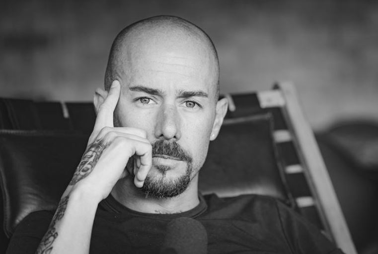

Para este segundo comentario de ingeniería tomamos como referencia el video de Arnold Schwarzenegger's en su discurso en la Universidad de Huston en 2017 y también como esta relacionado con el caos el cual describe Diego Dreyfus
Arnold Schwarzenegger's un fisicoculturista, actor y ex gobernador del estado de California da un discurso a toda la generación de graduados de la Universidad de Houston en donde agradece a todos, desde los estudiantes hasta los familiares y amigos; cuenta que gracias a ellos pudo lograr todo lo que ha logrado hasta ese día desde ganarse el premio de Mr. Universe hasta grabar la saga de Terminator, también reflexiona de como las personas influyen en la vida de cada uno, todos en nuestras vidas necesitamos en algún momento la ayuda de alguien, no todo lo podemos hacer solos, “no los recordaran por quienes fueron, sino por lo que hicieron”.
Por otro lado; también se puede ver como las palabras que dice Arnold Schwarzenegger's entran muy bien ya que si nos damos cuenta tiene razón, todos nosotros necesitamos de una o varias personas para salir adelante, ya sea económicamente, emocionalmente o simplemente admirándonos, en estas empresas a domicilios pasa algo muy parecido, estas empresas brindan trabajos a las personas desempleadas y las ayudan a ser constantes. Y por ultimo relacionandolo con el video de "Te deseo mas caos del que puedas aguantar", Arnold dijo que gracias al cambio sobre como conocio a un salvavidas y sobre como tambien por los fisiculturistas de aquella playa lo incitaron a que hiciera un cambio, se metiera al mundo del Fisiculturismo y asi poder ser 3 veces campeon de Mr. Universe.
En mi opinión siento que las palabras de Arnold son muy sabias y me dejan un gran aprendizaje ya que al decir que las otras personas ya sean familiares o conocidos influyen positivamente a nuestro crecimiento como profesional, y nos dan cada vez más ánimos para seguir adelante y sacar adelante la carrera. Al igual sobre la investigacion de Dreyfus siento que intrinsicamente dijo que en el mundo siempre habra equilibrio, que a pesar que la mayoria del tiempo se viva en caos, siempre habra como disiparlo y asi no llegar al punto de "explotar".